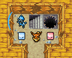

Pokémon Mystery Dungeon - Explorers of Danmakufu (DEVLOG)
Welcome to my DevLog for my collaboration project with FrenticPony!
What is this Project?
This project is our own Pokémon Mystery Dungeon game, made in Touhou Danmakufu ph3!
We are making the story from scratch, and we aim to have as much original material as possible while still maintaining the feel for the game (i.e. many fonts, sprites, sfx, and other graphical resources will be taken from Pokémon Mystery Dungeon Red, Blue, Time, Darkness, and Sky, partially due to our limitations and partially for authenticity).
As per doujin guidelines and due to the Pokémon Company's copyrights, this game will be distributed for free and we will assume all costs associated with commissions.
I plan to update this devlog every day I have done something for the project. As the person who has declared responsibility for the entirety of dungeon creation, I will try to make the game as authentic and fun to play as possible, and of course... it wouldn't do if we didn't have new items, right?
-snicker-
Notice: This project is dead and has been replaced by the less-ambitious Touhou Mystery Dungeon project.
DEVLOG
March 29, 2015
Code never fails to surprise or disappoint. To fix Achy's Map 4.1, turns out I had 6 missing tiles and a stupid bug.
But that aside, this project has come quite a long way, and I have high hopes for the first demo. Of course, it will not be a public demo because it is *nowhere* near that level. But still... this project's dungeon portion has come so far from my (and Achy's) work...
March 28, 2015
Today was another day of semi-productivity. I started out today by formatting the PMDItem image will all kinds of stuff into an image for the trap/stair/etc images and another file with all of the item graphics - sorted and arranged into a proper spritesheet.
Achy finished his map as well, and that worked well - it found some minor glitches as well as two cases of the remaining 9?, which I took care of.
However, this was concluded with a sour but true truth about the game - it's running at 40 FPS with none of the battle system and with debug controls turned off. That means that the single 48x36 2D array is dropping the FPS by THAT MUCH. Not to mention that I haven't completely addressed the issue of the padding.
I will likely create a single gigantic render object underneath the tiles, and it will just contain the most generic wall graphic I have. This way, all future maps will be maximum 52x28 with two tiles padding on the edges (2 because if there's only one tile, things screw up), and it will be rendered over a tiled graphic on which the player cannot move but one that looks like normal walls.
...There's so much to do... But each step gives me experience as well if I ever decide that I will actually implement this in C++... (which remains to be seen, since if I can't get the proof of concept done, I can forget about implementing this all in a language where I have to implement my own GUI, camera, and graphics manipulation. AKA make my own engine)
Achy made another two maps, one of which gave me some problems (it had incorrect formatting) but showed a few cases for me to fix up with water/floats. But with these two maps, I was able to begin generalizing the cases that require or statements - I.E. three individual cases that result in a specific tile can be narrowed down to one with an or statement between two of the parameters, of which one or both must be true. I've gotten used to this kind of rigorous testing by now...
Development today concluded with Achy's fourth map running perfectly from the get go and his inverted map bringing up completely unexpected issues with room tiles. EW. MUST FIX... tomorrow.
March 27, 2015
Once again, my eyes burn. Today, I made about 25 new tiles that were missing, as well as other stuff. I did mainly standardization to Explorers of Sky tileset standards - such as the presence of gravel literally everywhere. I cleaned things, did Map 5 (which was really full of issues of which I fixed all), and overall had a miserable time.
The good thing is that Achy will be making the next map instead of me. But truth be told, looking at the HD screenshots of the game... I feel that all of my effort put into making that tileset and doing all of this map work is really amazing... It's well worth it since it's so pretty.
I still haven't gotten to adding a player yet. I hope that day comes soon...
Note to self: The species-specific found in treasure chests in Explorers of Sky are those found in the dungeon the chest was dropped in. If I ever implement species-specific items (...), this should be taken into account, as well as the possibility of making Silks and Dust the super rare finds in dungeons. Also... I think Golden Chambers are a bad idea and that it is best to not implement them at all. After all, chances are that there will be a special dungeon where there is a 0.5% chance to find a Sun Stone lying on the ground rather than some room that you can literally go to once a day in order to get items that lose their sentimental value quickly because of how often you can go to the Golden Chambers. Today, in three hours, I got three Sun Ribbons, two Sun Stones, and a Gold Ribbon, along with gummis and stuff. Since missions may never make it into the game, I say we just ditch Golden Chambers altogether...
March 26, 2015
Today I didn't really do much in terms of programming. Mainly, I organized stuff and thought about item spawning.
In the game, I think it's best to have each treasure chest correspond to a specific set of items of a set rarity. This is something that would make implementation much easier. Additionally, to make dungeons even more unique, there should be a rare chance to find low-level species-specific items in dungeons (most likely in walls). The ones that would be available would correspond to the Pokémon living in the particular dungeon. In preparation for this, I consolidated some small include files and officially began assigning dungeons their own IDs (currently there is only one dungeon though, so lol).
As for ammo and money, I can define them as PItem objects and give them settings for value and amount. So practically, it shouldn't actually be as horrifying as I initially thought in terms of implementation.
I've also begun writing a database for locations of Pokémon. Under my system (if we ever get this far), it would not be possible to recruit evolved Pokémon at all, or there would be a very low chance. Regardless, this is a story for another time.
In my current plans, I have space for infinite dungeons. On that note, I have decided that it might be a good idea to standardize my tileset choices to the ones put forth in Explorers of Sky - this will make tiles less random and more boring, but it is necessary for standardization. Regardless, it shouldn't be a problem.
March 24, 2015
I was productive today, unlike usual. I added a bunch of new water and wall tiles to take care of obnoxious cases, and finished Map 2's implementation! Whoohoo!
Immediately afterwards, I got water cases on Map 2 to work, and made Map 3 (which included a not-so-subtle engraving of my name into the dungeon, although the thing is transposed, so it didn't work out as planned). I enjoy knowing that each map will break something and that after fixing it, I will feel proud of myself. I implemented shop tiles and did some other stuff to avoid DirectX9 issues, and then... after a few hours of tile rects and trial and error and case by case overrides and OOPSes... I got Map 3 to work!
At this point, I realized that if there was a bad water case, I would be royally screwed, for float, so I since I had set them up for code redundancy beforehand anticipating something of this nature, I altered my water function to also work for floats, just with an ID and an offset. Fabulous! And, unlike literally everything else that happens when programming, it worked on the first try.
Map 4 was made to test floats, and the entire thing worked on the first try, which was amazing. At this point, I went and changed the name of the dungeon to Runesvale Plain, as well as some other things such as finally changing the music and the like. Thankfully, warp tiles were not hard to implement, and everything went really smoothly! Devlog video below!
March 23, 2015
I was productive today. After talking with Frentic about getting the SFX for the game, I considered making my own tileset. And then I figure, why not. So I began.
Over the course of about 8-10 hours, I worked on my own tileset, which was meant to cover every single possible combination of tiles in existence while at the same time providing a template on which Achy could impose his own tilesets so that one function would work for loading all tilesets. I began with walls, then moved on to rooms, then went back to walls. So much editing. So much copy paste. So much horror. And then I made Map 2. This was the map meant to test non-square dungeon floors and have every seeming combination of tiles I could throw in (it is missing quite a few).
I ended up being smashed in the face by DirectX9's *2 image issue. I did lots of things to alleviate it but I was only partially successful. Oh well. Anyways, stuff happened, and I spent a few hours having Map 2 render correctly.
'A few' hours is probably a bad estimate, because it took like 6 hours at the very least. On the way, I made some water tiles and failed to make lava tiles. In the end, I got Map 2 to work for all wall/room/hall combinations present in the map using case by case fixes. Good god the FPS with my camera debug code is bad for the 48x36 grid. Anyways, turns out implementing water fully will have to wait - I am tired, and I forgot to make a large number of tiles for water, so I need to do that before I can continue implementation of that and float.
To conclude, have an image of my beautiful new tileset (custom made by me - please do not steal or I WILL find you) as well as (hopefully) no rendering issues.

March 22, 2015
Today was a day of discovering limits. I did a lot more wall stuff only to learn that the tileset couldn't handle it, which really sucked. So many tiles missing. Anyways, I ended up changing the map, and I did a lot of reorganizing - mainly making a function for tileset loading because Room, Room edges, and Halls all have the same loading mechanism.
It took a long time, but I ended up finishing the entire tileset function list! Hooray!
P.S. This was supposed to be written on the day of the devlog, but I completely forgot to write one, so I'm writing this the day after while looking at the changelog. There's a devlog photo which I don't feel the need to share.
March 20, 2015
Today was pretty productive as far as this devlog goes. I began by writing an enemy creation function skeleton. Basically, each enemy has a certain range of floors, and I just see if the current floor is acceptable. If so, I dump the Dex No. of that enemy into the array of possible Pokémon, and one of them will be chosen randomly when the function if called.
After this, I began preparations for loading a map from file. I already had a map, so I had to turn it into a 2D array of tiles. I began by looking at the ObjFile functions. Unfortunately, there was no way to get an individual character. Regardless, I added some type functions to ObjTile and then Drake and GTBot gave me the wisdom to move forwards. GT had a ridiculously simple solution that involved getting each line and indexing the string, and it worked! I implemented it, and it didn't crash!
With the map loading function done, it was time to move forwards with the coding. So I began writing my function to load Tileset graphics. There was a lot to do, and as I went on, I ditched the constants for their respective numbers because I could save space. It took a long time, and I began with the edges of the map and tiles that had no different bordering tiles. Of course... my function was saying that the state was -1, and I facedesked (not actually) when I saw the ObjTile_SetType commented out.
After another facedesk due to not using ObjSprite2D_SetDestRect, I got the walls to load! See image below:

And of course, this made me very, very happy. I tweaked the tile spawn ratios of flowers and the like, and began implementing some of the other things, such as when the bottom left corners were rooms and the rest were walls.
In the end, I got most of the walls done. There are some known cases that I need to work on, and there are cases where the tileset cannot even handle the issue (such as when the top left and bottom right corners are not walls and everything else surrounding a tile is). I also learned that my map was rendered flipped across y=-x, which will make things a challenge once I have non-square things. I hope all goes well... Regardless, have the other image.

Anyways, I need to implement the rest of the walls as well as rooms in order to complete the first tileset. And then... time to test creating a player, timing turns, and testing collision and camera movement!
Below is the second DevLog video!
March 18, 2015
While playing more Explorers of Sky, I realized some more issues... especially with how level ups and evolution (in terms of stat changes) will work. And it was utterly horrifying at the thought, because then dealing with permanant power-ups becomes an issue. Regardless, I assembled a Tileset and plan to get the dungeon graphics working. Hopefully it'll go well.
March 17, 2015
More playing Explorers of Sky, more wondering about how the dungeon creation algorithm works, and actual doubt as to whether or not they used premade maps... Regardless, I made a sample map which I hope to implement for testing, and I've been looking at things such as tilesets and the like. I wonder how I will approach stat buffs and debuffs, especially, since those may be better handled using non-Obj_SetValue parameters... Hmm... (Though wonder tiles are not a priority at the moment)
March 14, 2015
Another day of no real programming for the project. But I managed to do a slight few error fixes. A lot of stuff happened today, including some playtime of Explorers of Sky. I am seriously considering using the space allocated for the mini map and using it for the player's moves and PP, with keyboard shortcuts for activating each attack.
March 12, 2015
Today was the definition of not getting anything done. All I did was fix some function names in ObjPokemon, play around with the Tiny Woods tileset, and write some skeleton stuff in my floor script, where I basically just created the player object and nothing else.
Still, I need to finish DEC, so that will take priority over this project until DEC is complete.
March 8, 2015
Today was as uneventful as could be in terms of development - I had a lot of work to do, so I had no time to develop. In the end, all I did was make a folder for future tilesets, rename lib to lib_Sparen because we'll have separate overworld and dungeon libraries, and create files for ObjPEnemy and ObjPPlayer, which will be used for dungeon enemies and dungeon players, respectively. They haven't been tested (almost nothing has been...), but they will be in due time, though I will need to give them something other than a constructor...
I did a bit of experimenting with tiles and dungeon floors, and I soon came to the realization that a 100x80 tile floor was too large, so I shrunk it to 75x60. Then I did the math and realized that I would need a whopping 4500 tile objects, which is far too many for Danmakufu to ever possibly handle, as well as the fact that indexing the 2D array would be a major problem.
I eventually shrunk it down to 60x48, which I will use for testing as it is a good size. At this point, I also learned that each tile is represented in the Minimap by four pixels - effectively the dungeon is a 6:1 scale to the Minimap. The space I had set aside for the Minimap in the STG_Frame was only big enough to handle a 36x31 (or 34x29, to give padding with the edge) floor, so I was forced to ditch it entirely. In the game, the mini map, if implemented, will most likely be rendered over the actual dungeon like in the actual games simply because there is no place to cram it that is big enough.
Wow... this devlog was far longer than I expected given that I have done literally nothing today for this project except for a few lines of code and 0 testing.
March 7, 2015
Today began with even less fanfare than yesterday. I did a few things here and there, and wrote some ObjTile, although it was basically limited to x and y positioning. I had a talk with Frentic about various things, and then decided to go and actually implement my tests!
(What I am leaving out here is the four or so hours I spent trying to decrypt and rip the base graphics of Explorers of Sky, as well as the playtime I had, where I soon realized that we would need a new set of virtual keys to make up for the A, B, X, Y, L, R, start, and select buttons. Horrifying.)
Over the course of a few long hours, I moved and ported existing libraries, purged code, and made a STG_Frame using Frentic's graphics. And then came the beautiful part - actually making the tests.
I decided on the name Runesvale Plain for my testing dungeon. I made a stage file with bare minimum, and made a plural to load individual floors. Stages will function as dungeon dives, plurals will serve as locations (dungeons, boss rooms), and singles will serve as individual floors. I made a new set of libraries in lib_dungeon for these, such as a common file and my first item spawn percentage sheet. I guess I'll have an enemy spawn sheet as well in the future.
At this point, I wanted to make a location opener, but... I didn't have the font. I searched and search to no avail.
...but thankfully, Miransu recognized it immediately - it was Tekton Bold, and coding began... only for Danmakufu to freeze. I'll leave out the pain and suffering, but let's just say that I forgot a ", and that screwed up everything. At the same time, all of my libraries were run through the syntax checker and I had to fix literally every include statement and Obj_SetValueD call in all of my libraries. A pain.
In the end though... all worked out. I managed to get everything I wanted to get working working, and I'm really glad. Because now... I feel like I've really accomplished something, even if what I have done is miniscule in reality. Basically, I never planned to be writing the GUI and dungeon spawning code after what, 5 days? It's a fulfilling feeling, especially when listening to the Gates to Infinity BGM (which is better than the game).
Below is the first DevLog video!
March 6, 2015
Today began with relatively no fanfare. Another snow day. But that meant that I had, of course, time to make function libraries!
I began with lib_ObjPokemon, which was to hold everything about a Pokemon that could possibly exist (yeah, I know). Turns out it was a harder endeavor than I thought. Implementing HP and types and stats was fine. I made lib_ObjStatusEffect while I was at it, which became a nightmare, so I moved all of the constants to a constant file instead - the actual library just includes the constant sheet, which is sort of sad and sort of relieving at the same time.
lib_ObjPokemon was fine. I added terrain, a way to initialize from Dex No. like I had set up for ObjAttack, and also added stuff for size and specie. But then I wanted to fill in the data in ObjPokemon_LoadSpecieFromID(obj, ID). So I decided to write a C program to do it for me since I knew I was fully capable of it.
A while later, I had my Makefile and my C file, and I gagged when it spit out 344 kB of code. And this was the SKELETON - none of the actual fields were filled with meaningful information. In the future, I'll be rerunning this program with even more functions...
Regardless, AchySolrock volunteered to make Tilesets, which is going to be helpful, although the time for that is in the future - I haven't implement a basic const_ObjAbility yet, and ObjTile is going to be one of the biggest endeavors in the library creation phase. And mind you, I haven't actually tested ANY of this code - I have to hope it works as expected.
Still, the pride of making my first C program that wasn't for a class... it was amazing. I'd dump it here on the website, but putting it in a pre block is about as close to disaster as I could ever get, so I will hold off on that - especially since it is still in development.
As for BGM, I got the dungeon tracks for Gates to Infinity, and it'll be nice to have more sacrificial testing bgms to choose from.
March 5, 2015
So today was the day when I first saw Frentic's beautiful and amazing work. Although it was a proof-of-concept, it was amazingly well done, with animations, bgm, correct text formatting, collision detection, and more. I was awed, especially after my failures in Java and the realization from other members of LOCAA that this project might actually be possible. So Frentic reached out, and voila. I accepted.
This devlog is here because it NEEDS to be here. If I don't keep a devlog, I don't know how I will be able to vent my rage and joy. We're not using Github or Dropbox (yet) since I have to get to sumer break first, so I'm preparing all of the function libraries in advance of implementation. I made lib_ObjAttack three days ago as a proof of concept (for creating our own classes and data structures in Danmakufu - it's way more clunky than in C and nowhere near as convenient as Java), but now it seems I may be using it...
I expanded my paltry lib_ObjAttack with elemental types, more attack types, Power Points, crit rate, accuracy, and names, among other things. I also set up a create w/ name which may be of use in the development phase, as well as our main ObjAttack creator - ObjAttack_CreateEXB(ID), which takes a numerical ID (each attack will have its own ID) and will load literally everything by using a switch statement. Granted, I may have some issues with this later (I will. It's programming.), but I've got to give it my best shot.
As for const_Item, which I began work on immediately after deciding that I was going to go along with making this project in Danmakufu, it became a slugfest as I drudged my way through Serebii.net and Bulbapedia. It currently stands at 11 kB of sheer text (all of it constants so that we can identify items by a single number in the future), and is only going to grow as we implement more things. Granted, I can probably remove most of the items, although I have provisions for a couple thousand left in the list.
So, do you want to watch this project? If you do, here will be the place. Not on MotK - this isn't a Touhou project. Everything will link here to the devlog until we have some measure of completion done. Hopefully this project will live... and overcome its hurdles.
It will be a lot of work. A LOT of work. But it will pay off, both for ourselves and for those who love Pokémon Mystery Dungeon. We'll have to make most of the tilesets and all of the bgm at the very least, and hopefully... one day... we will be able to play the game we made ourselves...
Below is the post from Facebook:
It's sort of official, I guess! I'll be working with FrenticPony over the next year or so to make our own Pokémon Mystery Dungeon in Touhou Danmakufu! ...that is, assuming we both have the patience to get past the first major hurdle - system creation and unification. ...and since he already has a dialogue system and the like in place (sort of), it's my job to figure out how to write the entire dungeon system, including attacks, items, mechanics, statuses, ranges, item spawn percentages, tiles and tile graphics, and all of that other good stuff. And of course, saving progress, which shouldn't be terrible given that I just spent an hour writing a constant sheet with about 400 existing items that have already been dumped on my to-do list. Summer will be great~ (Now... as for tile set replacement, figuring out the animations, and obtaining all of our bgm... that's a different story...) I guess I'll have to choose a sacrificial bgm for my testing dungeon, because I'll be listening to it until I'm sick of it.